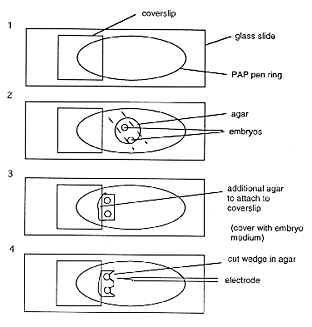

1. Mount embryos in 1.2% agar (see Agar Mounting, Chapter 4).
2. Use a razor blade to cut flat faces in the agar approximately 1 mm from the embryos on the side to be injected and on the side directly opposite.
3. Slide the agar containing the embryos until it rests against the edge of the bridged coverslip. Glue it down with some extra agar and cover with Ringers.
4.Remove wedges of agar with a platinum wire over the embryos so that the pipette has free access. In older embryos (>24 h) use the wire to tease a small hole in the skin for the pipette to enter.
5. Place the embryos under a high-powered water immersion lens (e.g. 40x) with as large a working distance as possible and use Nomarski optics during the injection.
6. Dissolve 2 mg/ml DiI in dimethylformamide (or ethanol), in a microfuge tube. Filter by centrifuging through an 0.2 µm filter. Store at
4°C. This solution remains stable and can be used for months.
7. Backfill sharp glass micropipettes (tip resistances of approximately 100 megohms) with the dye. When the tip is filled, backfill the remainder of the pipette with 0.2 M KCl.
8. Insert the pipette into a holder (e.g. WPI) attached to a current source.
9. Mount the pipette in the holder on a micromanipulator that allows you to bring it down to the embryo at an angle. Once the embryo and the pipette are in focus, use the stage for the delicate movements.
10. Punch the pipette through the skin quickly.
11. Bring the tip into contact with the cell to be labeled.
12. Pass current through the pipette to an agar bridge ground electrode (see Agar bridged ground wires,) gradually increasing the current until dye is emitted.
Monitor the labeling directly through the microscope. Labeled axons will become visible immediately near the injection site. Wait 30 min or more to see more distant labeling.
Monitor the labeling with an image intensifier and camera. Labeled cell bodies will become visible slowly as ghost-like figures against the background. Initially, labeled cells seem to be very sensitive to illumination, but less so later.
For labeling neuronal processes
For lineage tracing
The Zebrafish Book